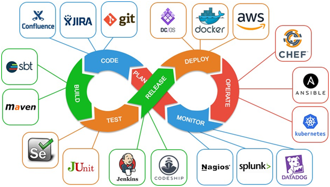

DevOps is a set of practices that combines software development (Dev) and IT operations (Ops). Its goal is to shorten the systems development life cycle and provide continuous delivery with high software quality. DevOps is a culture that promotes collaboration between development and operations teams to improve efficiency and productivity.
DevOps helps organizations deliver software faster by automating processes and enabling continuous integration and continuous delivery (CI/CD) pipelines.
2. Improved Collaboration:DevOps fosters collaboration between development, operations, and other stakeholders, leading to more efficient workflows and better communication.
3. Enhanced Quality:DevOps promotes automated testing, monitoring, and real-time feedback, resulting in fewer bugs and higher quality software releases.
4. Scalability and Flexibility:DevOps allows for easier scaling of applications and systems, making it easier to manage large infrastructure and adapt to changing business needs.
5. Continuous Learning:DevOps is constantly evolving with new tools, technologies, and methodologies, providing opportunities for continuous learning and improvement.
CI/CD pipelines automate the process of integrating and delivering code. Tools like Jenkins, CircleCI, and GitLab CI are commonly used to set up pipelines for continuous integration and delivery.
2. Infrastructure as Code (IaC):Infrastructure as Code allows you to manage and provision infrastructure using code. Popular IaC tools include Terraform, Ansible, and CloudFormation.
3. Containerization and Orchestration:Containers like Docker allow developers to package applications with all their dependencies. Kubernetes is widely used for container orchestration to manage, deploy, and scale containerized applications.
4. Monitoring and Logging:Monitoring tools like Prometheus, Grafana, and ELK Stack (Elasticsearch, Logstash, Kibana) help teams track performance, monitor system health, and troubleshoot issues.
Start by learning the basics of Linux commands as most DevOps tools and practices are built around Linux systems.
2. Understand Version Control:Learn Git for version control. Familiarize yourself with Git workflows and repositories on platforms like GitHub or GitLab.
3. Master CI/CD Tools:Get hands-on experience with CI/CD tools like Jenkins, CircleCI, or GitLab CI. Set up automated build and deployment pipelines for your projects.
4. Explore Containerization:Learn Docker to create and manage containers. Understand how containers work and how to integrate them into development workflows.
5. Learn Orchestration Tools:Master Kubernetes to orchestrate and scale containerized applications. Set up a local Kubernetes cluster and experiment with deployments.
6. Familiarize Yourself with IaC:Learn Infrastructure as Code tools like Terraform or Ansible. Understand how to write code to automate the provisioning of servers, networks, and other resources.
7. Build and Deploy Projects:Practice building and deploying projects using a combination of CI/CD, containers, and orchestration. Try deploying a simple web application with automated pipelines.
* Git: Learn how to use Git for version control, including branching, merging, and managing repositories. Familiarize yourself with platforms like GitHub or GitLab.
* Git Workflows: Understand various workflows such as feature branching, Git flow, and trunk-based development to collaborate effectively with teams.
* CI/CD Tools: Learn to use tools like Jenkins, CircleCI, or GitLab CI to automate build and deployment processes.
* Pipeline Configuration: Understand how to create and configure CI/CD pipelines, including stages for building, testing, and deploying applications.
* IaC Tools: Get familiar with tools like Terraform and Ansible for automating infrastructure provisioning and management.
* Configuration Management: Learn how to define and manage server configurations with tools like Chef or Puppet.
* Docker: Learn to create, manage, and deploy applications in containers. Understand Docker images, containers, and Docker Compose.
* Kubernetes: Get hands-on experience with Kubernetes for orchestrating containerized applications, managing deployments, scaling, and monitoring.
* Monitoring Tools: Learn to use monitoring solutions like Prometheus and Grafana to track application performance and system health.
* Logging Solutions: Familiarize yourself with logging tools like ELK Stack (Elasticsearch, Logstash, Kibana) or Splunk for managing and analyzing logs.
* Cloud Platforms: Understand the basics of cloud services from providers like AWS, Azure, or Google Cloud Platform. Learn about computing, storage, and networking options.
* Deployment Models: Familiarize yourself with different deployment models, including IaaS, PaaS, and SaaS.
* DevSecOps: Learn the principles of integrating security into the DevOps lifecycle. Understand threat modeling, vulnerability scanning, and compliance.
* Best Practices: Get familiar with best practices for securing infrastructure and applications, including identity and access management (IAM) and data encryption.
DevOps is a crucial practice that bridges the gap between development and operations, fostering collaboration and improving efficiency. Mastering the skills outlined above will help you succeed in this dynamic field. Start with foundational tools, experiment with real projects, and continuously learn about new technologies and methodologies. With commitment and hands-on experience, you can become proficient in DevOps and play a vital role in delivering high-quality software efficiently.
Recommended Resources:
Below are some highly recommended resources for aspiring and seasoned DevOps professionals:
* FreeCodeCamp: A platform offering free coding lessons, including DevOps concepts and tools. (Website: FreeCodeCamp)
* Udacity: Offers a Nanodegree program in DevOps that covers essential skills and tools in the field. (Website: Udacity)
* Linux Academy: Provides a range of courses on DevOps, cloud computing, and Linux systems. (Website: Linux Academy)
* A Cloud Guru: Offers courses on cloud computing and DevOps, including hands-on labs and real-world projects. (Website: A Cloud Guru)
* Pluralsight: A subscription-based platform with a vast library of DevOps courses and learning paths. (Website: Pluralsight)
* Docker Documentation: Official documentation for Docker, providing tutorials and guides to help you get started. (Website: Docker Documentation)
* Kubernetes Documentation: Official Kubernetes documentation for learning how to deploy and manage containerized applications. (Website: Kubernetes Documentation)